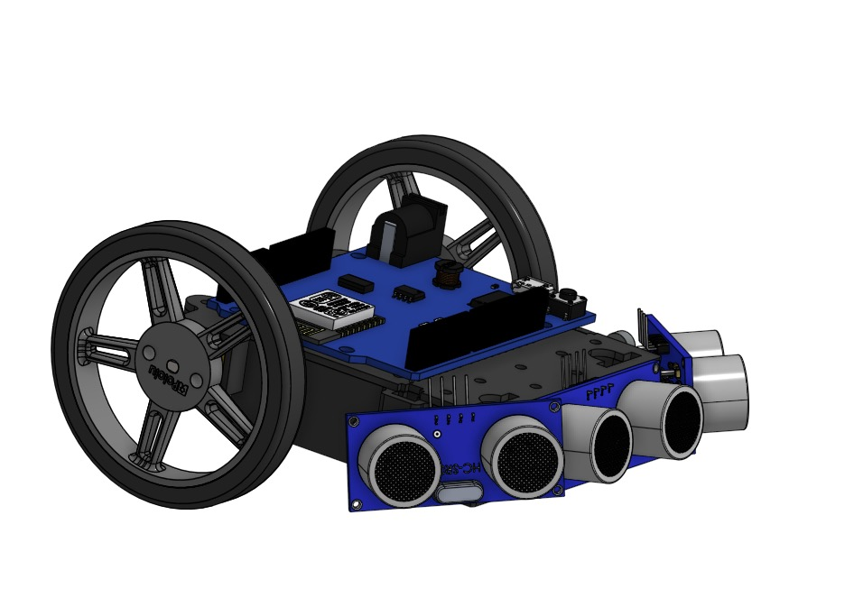
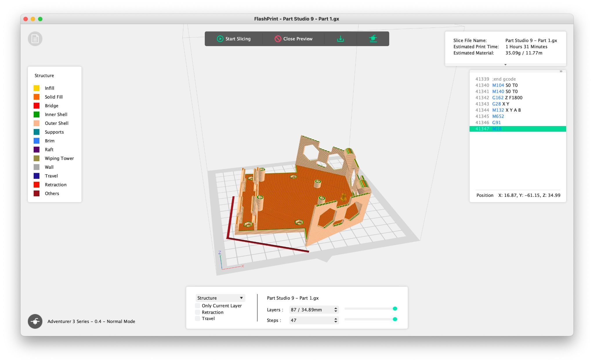
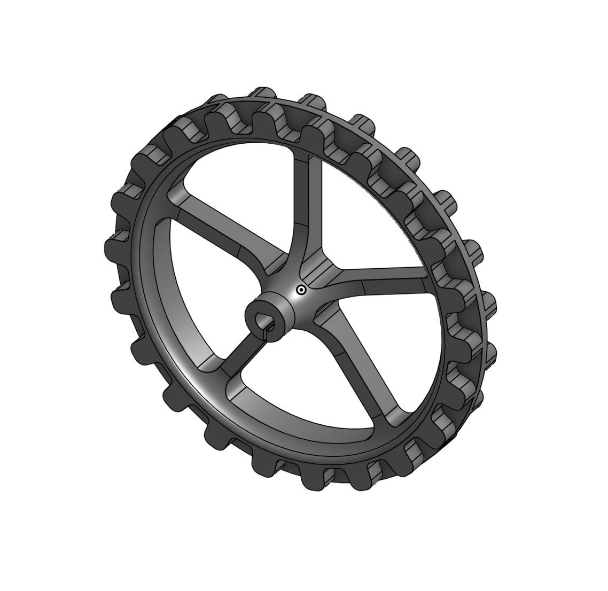
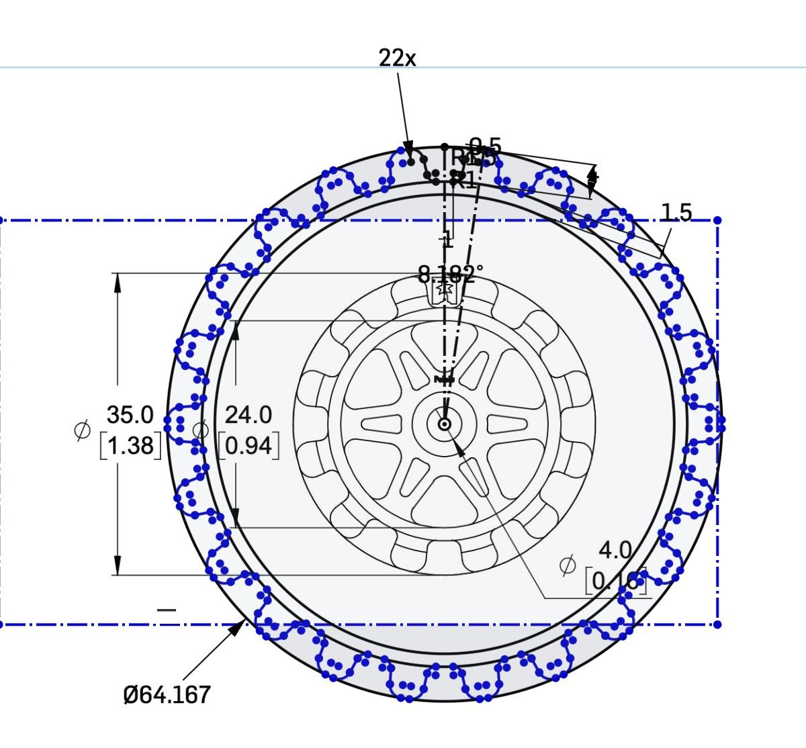
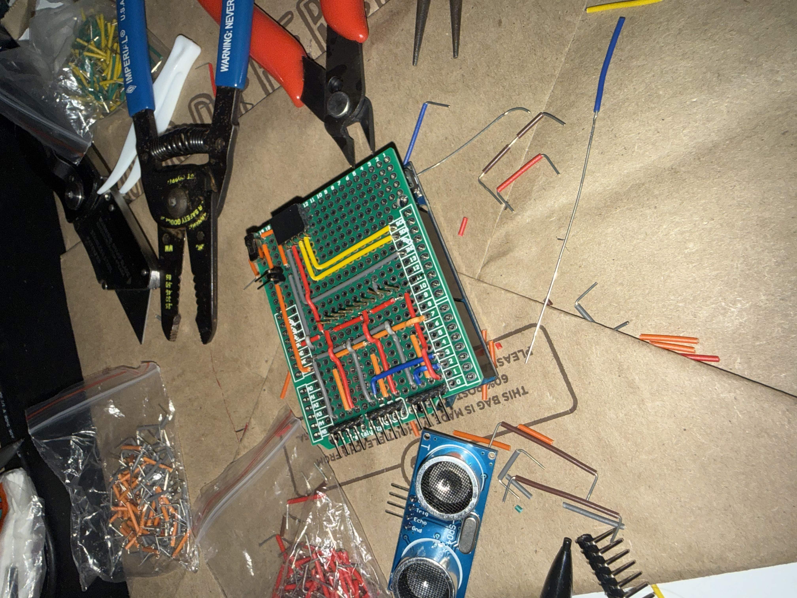
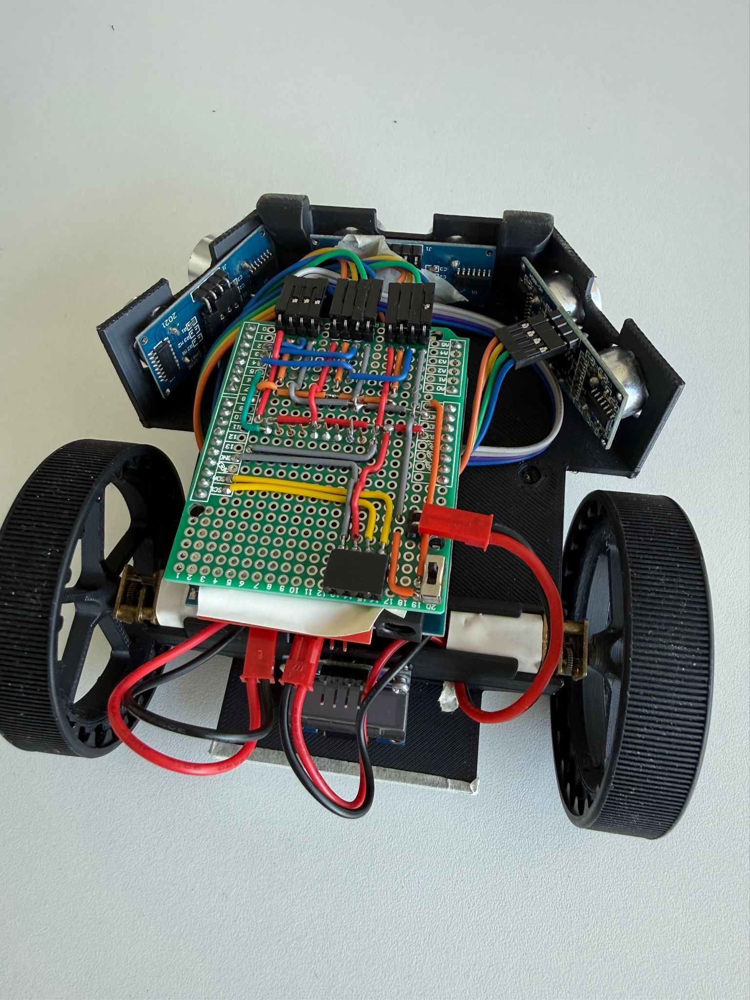
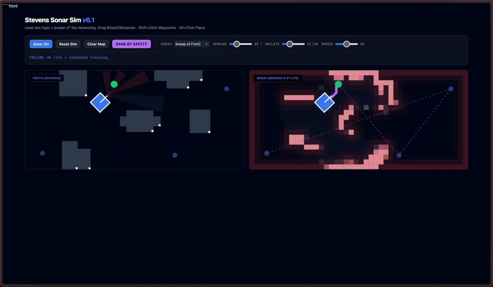

Autonomous Navigation Robot
For ENGR 122's autonomous robot competition at Stevens, our team took a different approach from every other group in the class. While everyone else built on the provided Zumo chassis, we designed and printed a custom unibody from scratch, made our own large-diameter hub wheels, and hand-soldered a custom PCB. Navigation runs a hybrid SLAM and D* Lite stack: three ultrasonic sensors dynamically build an 80mm occupancy grid as the robot moves, replanning on the fly whenever new obstacles are detected. In competition, the robot hit all four targets with zero collisions in 59 seconds - the top score in the class at 162.5 points out of 150 maximum.

The Challenge
ENGR 122 provided teams with a standard kit: Zumo chassis, two DC gearmotors, rubber tank tracks, three HC-SR04 ultrasonic sensors, a WeMos D1 Mini (ESP8266), a FeeTech SMC-4CH motor controller, and an SSD1306 OLED display. The assignment was to build a fully autonomous robot that navigates a 96x36 inch arena, reaches four target coordinates in sequence, and avoids five 3D-printed obstacles. The obstacle shapes are known ahead of time, but their placement in the arena is randomized each competition day. The target coordinates are also random, given to teams the morning of competition. Position data comes from an overhead camera tracking ArUco markers on the robot, broadcast over MQTT at approximately 10 Hz.
The core engineering challenge is sensor fusion: global positioning (where am I in the arena?) arrives from the MQTT/ArUco system at ~10 Hz with variable latency. Local obstacle detection (what's in front of me?) comes from ultrasonic sensors at every control loop iteration. The navigation system has to combine both, plan an efficient path to the target, and replan smoothly when new obstacles are detected - all on a WeMos D1 Mini with 80KB of usable RAM and no hardware floating-point unit.
Why We Replaced the Zumo Platform
An earlier course challenge required each team to drive around the arena perimeter twice with no obstacles and no ArUco tracking - just wall-following. During that challenge, it became clear we were going to hit a speed ceiling with the stock Zumo drive base. The most direct fix would have been to increase motor voltage, but the SMC-4CH motor controller was already at its operating limit. That left wheel geometry as the remaining lever: a larger effective wheel radius means more linear travel per motor revolution at the same motor speed.
Once we committed to designing custom hub wheels, the question became whether to keep the stock Zumo body. The stock platform would leave sensor positions hard to optimize and wiring difficult to route cleanly. If we were already printing custom wheels, printing a chassis that solved all three problems - speed, sensor placement, and wire management - was feasible within the course's print time constraints. Electronics went on the bottom of the chassis, battery on top as a separate removable piece. That layout made everything accessible and kept wires bundled and easy to trace.
Three chassis approaches were evaluated. The first was the obvious starting point; the other two were our own concepts.
| Alternative | Reason for Rejection / Selection | Decision |
|---|---|---|
| A - Stock Zumo + 4 mini wheels | Speed-limited due to small wheel radius; no straightforward way to increase speed without hardware changes outside our control. Limited space for 3 sensors, OLED, PCB, and motor controller simultaneously. Open frame makes organized wiring difficult, raising the risk of loose connections during operation. | Rejected |
| B - Custom two-layer stacked chassis | Electronics on a lower deck, ArUco bracket on a separate upper deck. Total robot height pushed the ArUco markers close to or above the 6.5-inch height constraint. Higher center of gravity risked tipping during high-speed path corrections. Two-piece design introduces joint flex that amplifies drivetrain vibration into the sensor mounts. | Rejected |
| C - Custom unibody + large-diameter hub wheels | Single-piece design integrates battery housing, sensor mounts, ArUco platform, and all component mounting features into one 3D-printed part - no inter-part joints. Custom large-diameter hub wheels wrapped with the original rubber tracks increase effective wheel circumference without hardware changes. Low-profile and compact: ArUco markers well below the 6.5-inch limit, center of gravity close to ground for stable high-speed cornering. | Selected ✓ |
Mechanical Design
Unibody Chassis
I designed the chassis in CAD and printed it within the 5-hour total print time constraint imposed by the course. The final part printed in 1 hour 31 minutes using 35.09g of material. Early iterations needed dimensional corrections on the motor pocket tolerances and wheel hub shaft fit, which were revised and reprinted within the allotted time.
Every mechanical function is built into one continuous print. The motor mounting pockets hold the DC gearmotors on the underside with M3 screws. The battery recess locks the NiMH pack in place without adhesive - directly satisfying the no-glue constraint. The front face has three recesses at fixed angles for the ultrasonic sensors, so sensor orientation is set by the structure rather than by hand-adjustment. The top surface integrates a flat flush platform for the ArUco marker holder.
Eliminating inter-part joints also improves sensor reliability. Drivetrain vibration travels through the chassis to the sensor mounts. Joint interfaces are flex points that amplify that vibration and cause sensor mount drift over time. The unibody removes all of this - the sensor positions are as rigid as the print itself.


Custom Large-Diameter Hub Wheels
The stock Zumo kit provides four small-diameter wheels per side in a multi-wheel track configuration. I replaced these with custom 3D-printed large-diameter hub wheels - one per side - that the original rubber tank tracks wrap around directly. The speed improvement comes entirely from geometry: a larger effective wheel radius means more linear displacement per motor revolution, with no motor or gearing change required.
To design the hub, I found Pololu's side-profile diagram of the 22T track on their site, which shows the tooth geometry. I traced that tooth profile from the diagram, scaled it to fit the belt teeth correctly, and then patterned it around the center to produce the full hub cross-section. The outer diameter that resulted from that process was 64.167mm - compared to the stock wheel's 35mm, a 1.84x increase in effective rolling radius.
Stock Pololu wheel (Zumo kit): o35.0 mm -> r_eff = 17.5 mm
Custom hub + Pololu 22T track: o64.167 mm -> r_eff = 32.08 mm
Speed ratio at same motor RPM: 32.08 / 17.5 = 1.84x
The original track wraps around the larger hub, engaging the same teeth -
no new track required. The hub outer profile was designed to match the 22T
track's 8.182 deg link pitch (22 links x 8.182 deg = 180 deg, half-wrap per side).
Result: the robot crosses the 96-inch arena in roughly half the time
the stock wheels would allow at the same motor speed.
The 22T track has a fixed link pitch; the hub outer diameter and tooth profile were sized to match it exactly at 22 links at 8.182 degrees per link, so the track engages a full half-wrap on each side. The five-spoke hub was designed around the Pololu track tooth geometry, with the profile traced from Pololu's own dimension diagram and patterned around the center. A first-print iteration needed minor dimensional correction before the track seated cleanly.


Electrical Design
The project explicitly prohibited breadboards - power distribution had to go through a wired bus or custom PCB. The goal for our electrical design was to reduce failure points and make it easy to spot a problem. Every connector is grouped together on the perfboard so you can see at a glance whether something has come loose. Any component can still be swapped out individually since everything connects via headers rather than being soldered directly to the board.
The board itself is a simple perfboard with header pins that connect to the ESP8266 and route out to all the needed connections: dedicated headers for all three HC-SR04 sensors, the SSD1306 OLED display, and the NiMH battery pack. The FeeTech SMC-4CH motor controller mounts directly to the underside of the board via a female pin connector, keeping the assembly compact. The PCB is screwed to the chassis floor. All solder joints were verified with a multimeter continuity test before any component was powered.
All power lines use red wire; ground uses black throughout, so any wiring fault is immediately visible. A slide switch on the positive battery line provides a clean hardware shutoff for the entire system. All connections are mechanically fastened; no adhesive or breadboard was used anywhere.


Software Architecture
The navigation stack was built by my teammates (Benjamin Umbrino and Alekos Antippas) and runs entirely on the WeMos D1 Mini. At a high level: every control loop iteration reads the latest MQTT position fix from the overhead ArUco camera, updates a SLAM occupancy grid from the three ultrasonic sensors, reruns D* Lite path planning if the map changed, and issues motor commands. The grid is 31x12 cells at 80mm per cell, covering the full 2438x914mm arena. D* Lite builds a Dijkstra cost map from the goal outward and extracts the path by greedy descent. When a new obstacle is detected and a cell is marked blocked, the cost map is rebuilt and the path re-extracted on the next loop iteration.
The team also built a custom C++ visualization tool called Stevens Sonar Sim to validate the full algorithm before deploying to hardware. The left panel renders the real arena at scale; the right shows what the robot perceives in real time: the SLAM-built occupancy grid, the D* Lite planned path, and target waypoints. Every competition configuration was tested in simulation before any hardware runs.

Sensor Placement: Why ±60°
All three HC-SR04 sensors share a single trigger pin (D7), with separate echo pins on D3 (front), D2 (right), and D4 (left). Readings are taken sequentially with 20ms delays between sensors to prevent acoustic crosstalk. The valid reading range is 40-1600mm; readings outside this window are discarded. Obstacle inflation is only applied within 900mm to avoid falsely marking arena walls at range.
The ±60° diagonal angle was chosen over the ±30° alternative. During preliminary robot tests, a front-only sensor arrangement produced blind spots on diagonal obstacle approaches - obstacles at an angle were not detected until the robot was nearly in contact, leaving insufficient time for the planner to compute an avoidance path. The ±60° spread provides a wide enough forward detection cone to catch obstacles offset from the direct travel path, triggering map updates and replanning before the robot reaches the obstacle.
Testing & Competition Results
Scoring Results
| Performance Metric | Goal | Result | Points |
|---|---|---|---|
| Target Reaching | 4 targets in order, 25 pts each | 4 / 4 targets reached in sequence | 100 / 100 |
| Collision Avoidance | Zero crashes (-5 pts each) | Zero collisions in Trial 2 | 0 deducted |
| Time Bonus | Under 3 min: +0.5 pts/sec | 59 sec - 121 sec under limit | +60.5 |
| Custom PCB (Extra Credit) | Fully soldered circuit | Completed and approved | +2 |
| Total | 162.5 / 150 max |
The 59-second run was 121 seconds under the 3-minute scoring threshold, earning the full time bonus. The speed advantage came directly from the mechanical decision to use large-diameter hub wheels: the same motors, more linear travel per revolution. The zero collision result in Trial 2 came from the combination of SLAM's obstacle persistence (obstacles stay marked after they're detected) and the D* Lite replanner's ability to route around them without stopping.